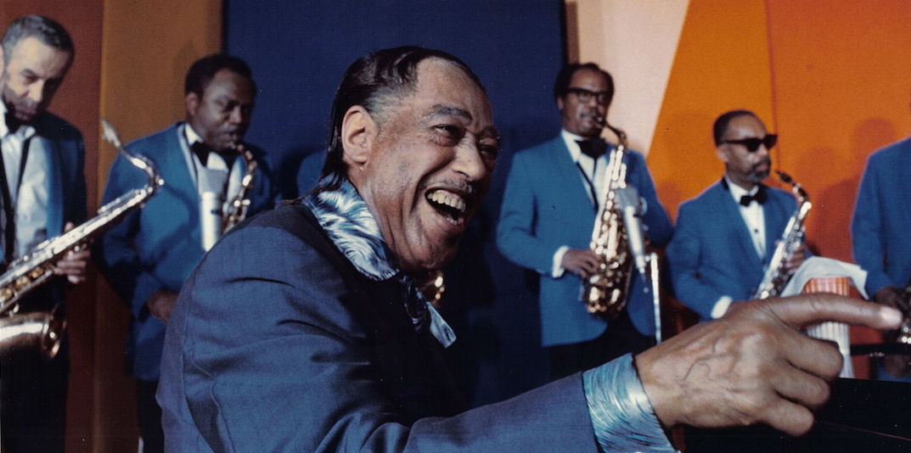
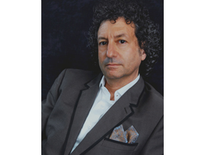

The Duke Ellington Orchestra

Four decades after his death, Duke Ellington’s world-renowned orchestra continues to tour. Led by pianist and conductor Tommy James, the band plays Ellington’s top hits and his deep cuts alike to crowds in the United States and beyond. Check back here for a comprehensive list of tour dates, and to book the orchestra please click the link on the Contact page.
January 30th 2016
January 31st 2016
February 1st 2016
February 28th 2016
April 23rd 2016
May 14th 2016
May 15th 2016
May 16th 2016
June 24th 2016
Villages, FL
Lakeland, FL
Ft. Myers, FL
Bethesda, MD
Lawnside, NJ
Rehovot, Israel
Tel Aviv, Israel
Haifa, Israel
Minneapolis, MN
Laurel Manor Center
Polk Theatre
Shellpoint Theatre
Bethesda Blues & Jazz
Lawnside Public School
Heichal Hatarbut
Charles Bronfman Auditorium
Haifa Auditorium
Orchestra Hall

A. C. Lichtenstein President, Ideal Entertainment, Inc.
As president of Ideal Entertainment, Inc., A.C. Lichtenstein acts as manager and agent to high profile musical artists including THE DUKE ELLINGTON ORCHESTRA and Motown legend MARTHA REEVES and the VANDELLAS. Working as a talent coordinator both internationally and abroad, Mr. Lichtenstein books artists for major television shows, corporate events, and fund-raising galas. He has worked with international superstars including, DIANA ROSS, DURAN DURAN, GLORIA GAYNOR, JAMES BROWN, LIONEL RICHIE, SHIRLEY BASSEY
As a theatrical producer, Mr. Lichtenstein produced the national tour of Spider-Man Live: a live action show that toured the country and culminated in a two-week engagement at Radio City Music Hall in New York City. He was also the producer of the hit Off-Broadway run of The Marijuana-Logues and the successful national tour featuring the legendary TOMMY CHONG.
Currently, Mr. Lichtenstein is the talent coordinator for the reality based series World Football Idol. Under the guidance of the legendary soccer star DIEGO MARADONA, the show will select the next up and coming international soccer star. The festivities have included performances by the disco diva GLORIA GAYNOR and the pop superstars DURAN DURAN.
Mr. Lichtenstein’s TV and film credits include: Headliners and Legends with Matt Lauer, the documentary Shirly Bassey: Divas are Forever, and Mr. Quinn on the hit TV series, Rescue Me.
“Lovers have come and gone, but only my mistress stays. She is beautiful and gentle. She waits on me hand and foot. She is a swinger. She has grace. To hear her speak, you can’t believe your ears. She is ten thousand years old. She is as modern as tomorrow, a brand-new woman every day, and as endless as time mathematics. Living with her is a labyrinth of ramifications. I look forward to her every gesture. Music is my mistress, and she plays second fiddle to no one.” - Duke Ellington